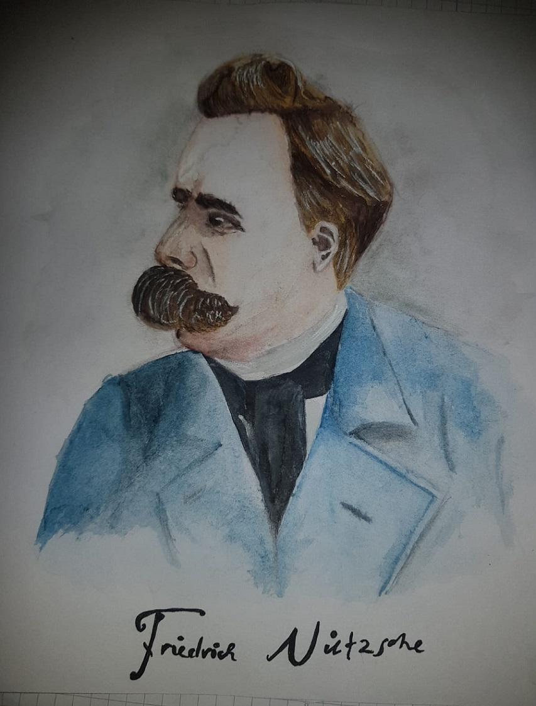
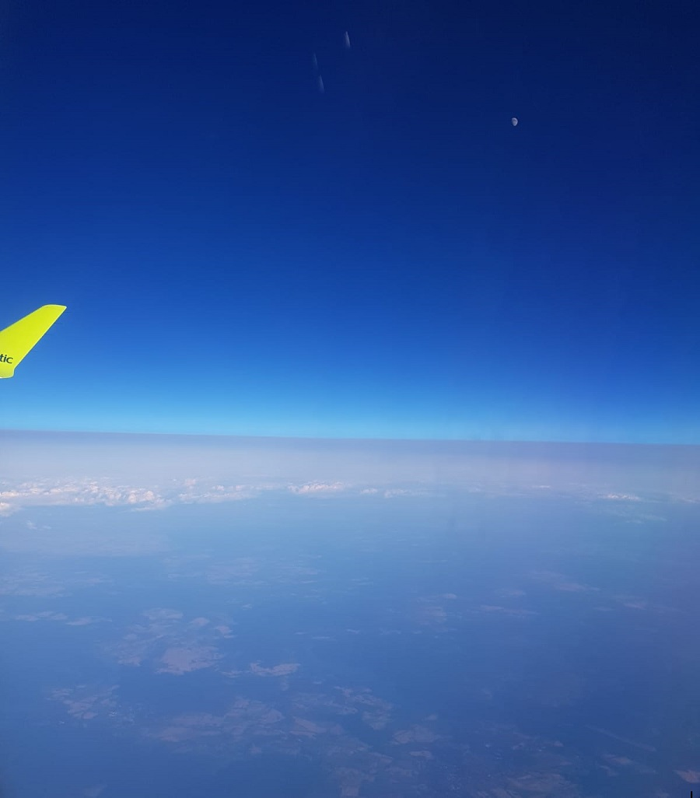

Arbeiten oder so ähnlich
Wasserfarben-Potrait von F.Nietsche
Eine fotografische Aufnahme über den Wolken
Video vom Meer
Motto:
Nicht die Menschen, die immer gewinnen sind die stärksten, sondern die die niemals aufgeben.Es ist immer zu früh, um aufzugeben!